|
Charleroi - Roda JC (1-0) 13 januari 2007
|
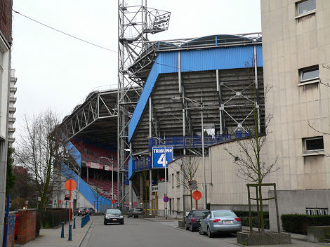
Het merkwaardige stadion van Charleroi deed denken aan een kruising tussen
de Galgenwaard en Highburry. Behoorlijk steile tribunes met open hoeken
temidden van een woonwijk.
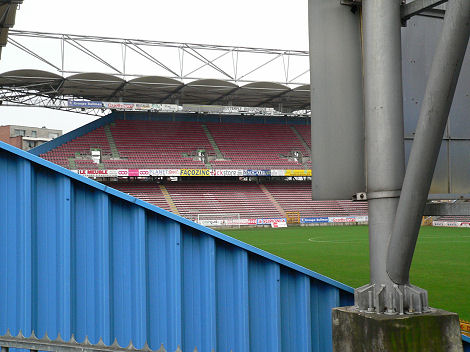
Het dak was PLS-style.
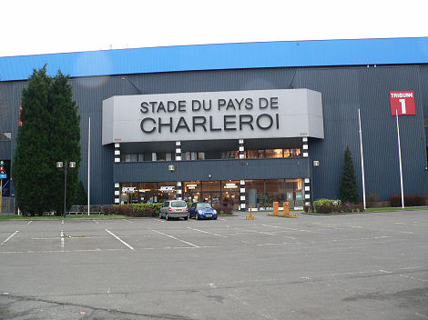
Stade du Mambourg heet nu Stade du pays de Charleroi.
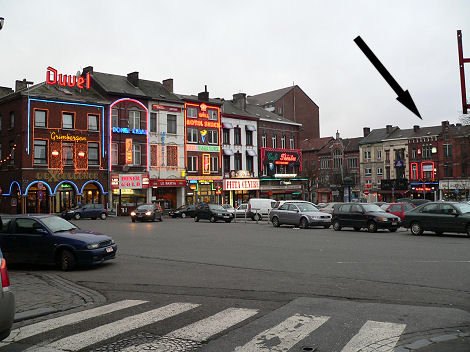
Het gezellige uitgaanshart van de stad. In La Cuvé Biére hadden ze 35 soorten
bier en....
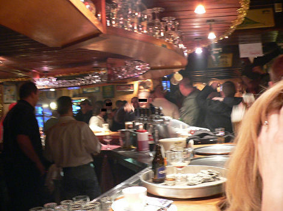
...50 vrolijke PSV-supporters die met een bus waren afgereisd voor een
"feestje".
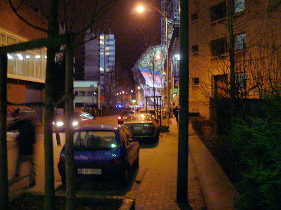
De "sfeercommissie" van Roda die eerder een uitnodiging had ontvangen voor een
ontmoeting sloeg de invitatie af. De PSV harde kern die een vriendschap heeft
met
Charleroi wordt door een enorme politiemacht afzijdig gehouden van de enkele
Rodasupporters.
Bij aanvang van de wedstrijd waren er slechts een handvol mensen van Roda. Een
groot aantal supporters was verdwaald en kwam pas tegen het einde van de eerste
helft binnen. Dat lukte aanvankelijk niet omdat men hen niet meer binnen wilde
laten. Aangezien het buiten het stadion behoorlijk gevaarlijk was vanwege de
jagende PSV- en Charleroi-hools mocht men na veel aandringen alsnog naar binnen.
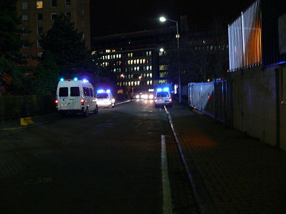
Een halfuur voor tot ver na de wedstrijd bleef de politie met loeiende sirenes
en
zwaailichten actief. Er was ook enige ME paraat inclusief de bekende hondjes.
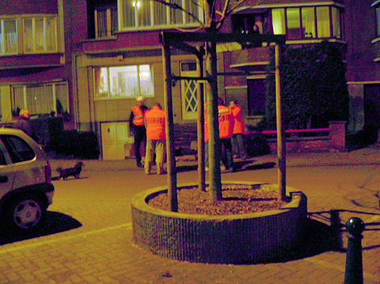
Drie arrestanten liggen op hun buik op de grond.
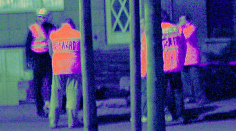
Detail van de vorige foto.
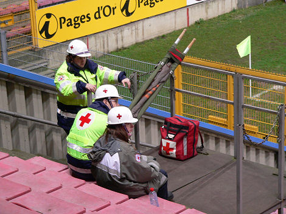
Charleroi huurde Zwitserse artillerie in met korte-afstand-raketten.
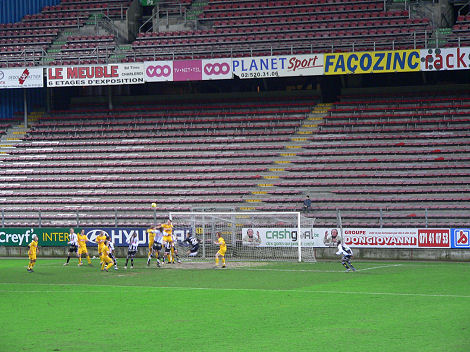
In de eerste helft wordt Roda weggespeeld door een uiterst beweeglijk Charleroi.
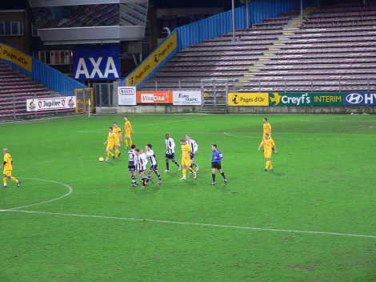
Na 14 minuten ligt de bal al in het net: 1-0.
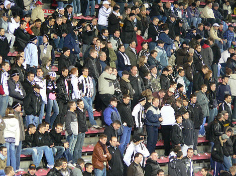
Weinig sfeer in het stadion met nauwelijks duizend bezoekers. Wel apart dat het
stadion "weg werd gezongen" door de ca. 40 Roda-supporters.
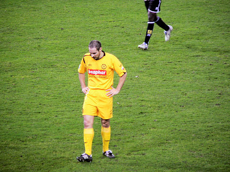
Bodor heeft een nieuwe coupe.
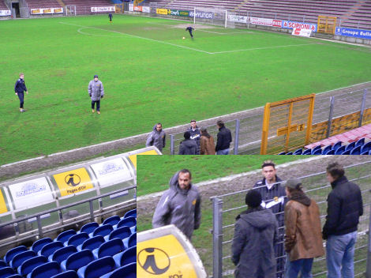
In de rust komen Rudge en Vandamme een praatje maken.
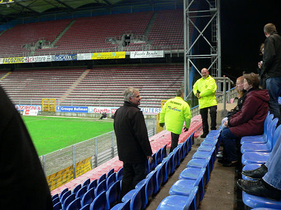
De plaatselijke VC adviseert de Roda-supporters om na afloop van de wedstrijd
nog een tijdje in het stadion te blijven. Ma Lachambre luistert aandachtig.
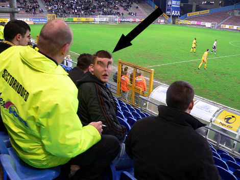
Een welbekende steward geeft C aardrijkskunde-les: "Charleroi is richting
Namen, niet richting Brussel." Mocht Roda nog ooit Europees spelen, vertrouw
dan niet op dit warhoofd uit Vlakbij-Sittard-Stad.
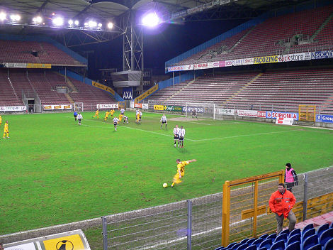
In de tweede helft speelt Roda iets beter en krijgt het via Van Tornhout de kans
op
de gelijkmaker. Dieter schiet echter één meter voor doel naast!
In de eerste helft werd een doelpunt van Roda afgekeurd wegens buitenspel.
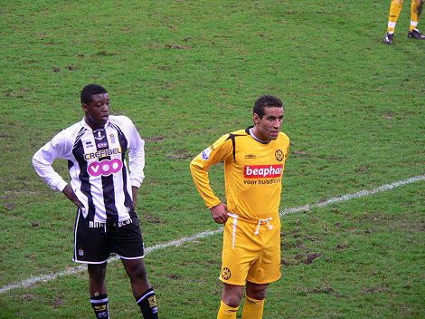
Bijna de gehele selectie kreeg speel-tijd. Zo kregen we Bouchiba en Rudge ook
nog eens te zien in het Roda-shirt.
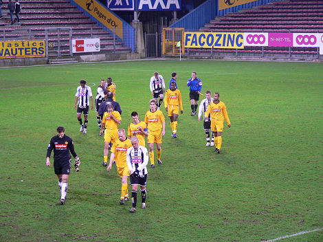
Einde van een beroerde wedstrijd. Gelukkig was er Jupiler in glas terwijl de
liefhebbers van een hamburger buiten (!) het stadion terecht konden.
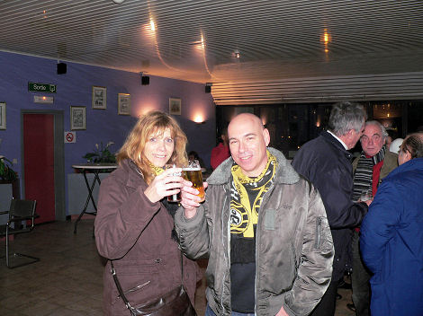
Afbieren in de VIP-lounge.
© Koempels Pleasure Dome
|